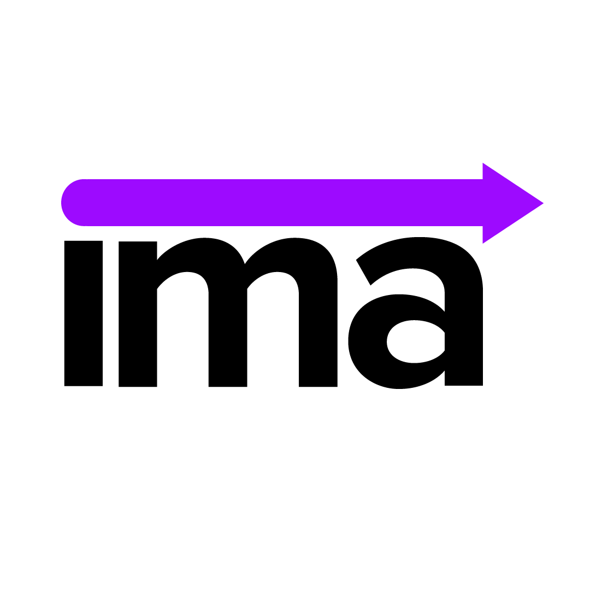

For an assignment in my design class, we were tasked with redesigning the
Interactive Media Arts logo. Across its branding, from website, to social
media, and banners, stickers, and signs, the Interactive Media Arts
program at NYU has several different messages, themes, fonts, and colors
spread across its branding. A combination on Myriad Pro, Montserrat, and
a custom, handwritten font contradict one another, and are constantly
competing against one another. In my opinion, none of these logos or fonts
truly represent the unique and innovative community that IMA creates. IMA
is a community of thinkers, makers, believers, hackers, coders, designers,
and builders.
Current IMA Logo
Word Association Exercise
To begin the creative process, I started with creating a collage of words I associate with the IMA program--community, looking forward, creativity, innovation, brilliance, etc. Following this, I moved into the digital realm, forming different ideas that could interpretate these words well. The phrase I decided to move forward with was, “looking forward.”
First Iterations of the Logo
One specific concept I wanted to include in the logo was an idea of an arrow pointing forward, while still connecting and acting as a part of the logo. The arrow, to me, represents the innovation that occurs within IMA, and how the people, the ideas, the projects, and the culture are always looking forward for the next big thing to create. I wanted it to still be connected to the IMA as a whole because of how our community brings us together, no matter how separated we are, physically, ideally, or emotionally. I didn’t particularly like my first run at design (top row), so I evaluated, went back, and recreated my ideas in a simpler manner (bottom row). Through further stages of development, I landed on this set (below) to continue with.
Next Stage of Iterations
Color and Font Choice
During the early stages of this process, I had trouble landing on a color palette that made me both comfortable and feel like the personality of IMA was being captured. Eventually I landed on NYU’s classic color palette of purples, ultimately moving forward with one of them. On the font, I immediately jumped to Proxima Nova, as I felt this font would fit well with an arrow moving forward, plus, it looks very nice in lowercase. I began doubting myself after the first stage of digital creation, as I didn’t like the Proxima Nova in all caps, but I felt like I found the sweet spot once I experimented with the font in lowercase.
A Good Draft
For the second-to-last look of this design, I went with the arrow on top of the “ima”. The final look is a combination of two separate logos, the dotted i, and the straight line. The purple dot in the “i” represents being able to stand out as an artist, designer, builder, etc. The arrow represents said artist, designer, builder moving forward, looking toward the future, like aforementioned. I took it one step further after this, because, you know me, and you know I'm not satisfied.

Final Concept of the IMA Logo Redesign
This was my final draft of the logo redesign assignment. I wasn't in love with the rounded line overtop of the text, so I returned to the blockiness in the left side of the arrow, giving it the dot that I enjoyed so much, as well as the arrow that I enjoyed so much. The viewer is able to see that both are separate, yet together at the same time.